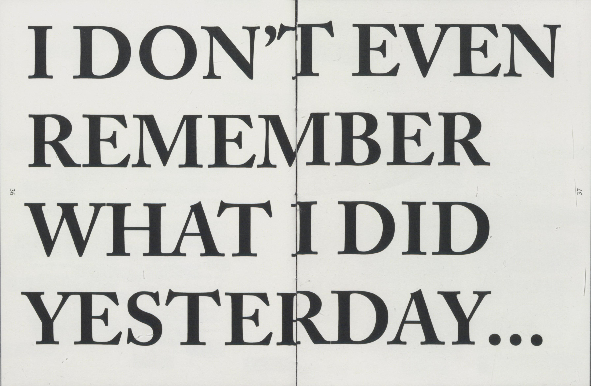
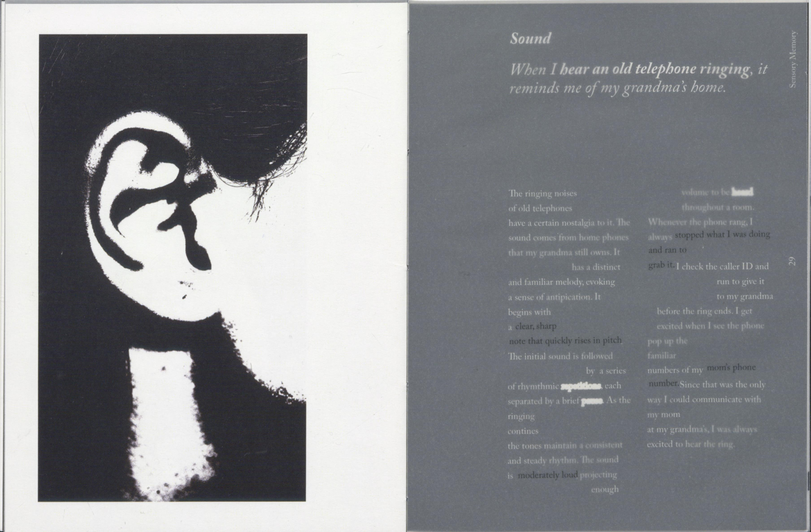
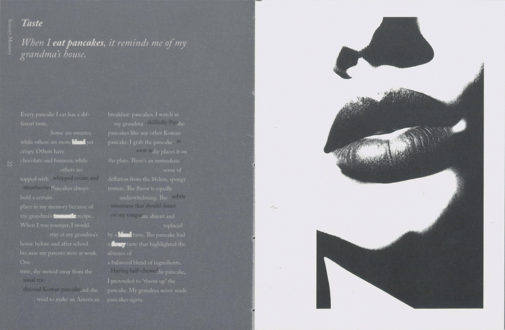
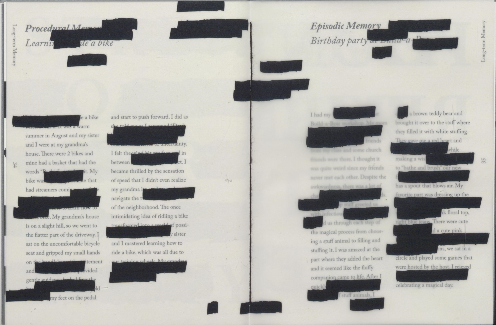
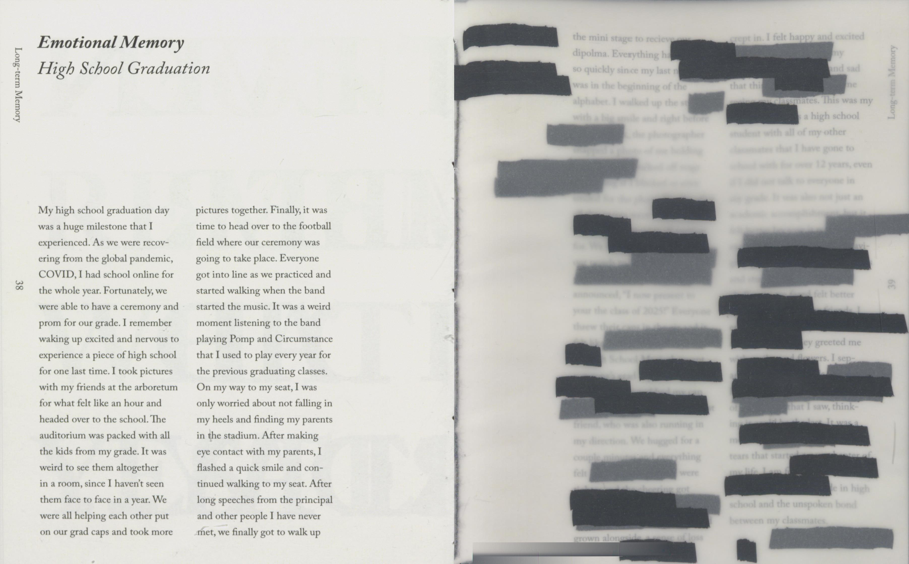
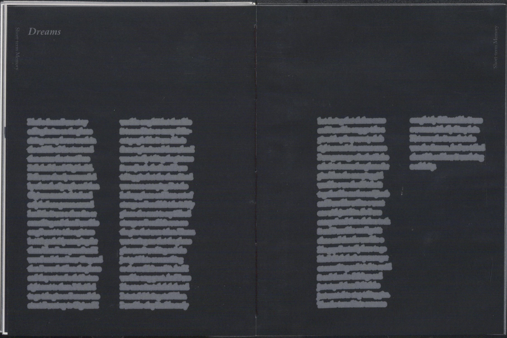
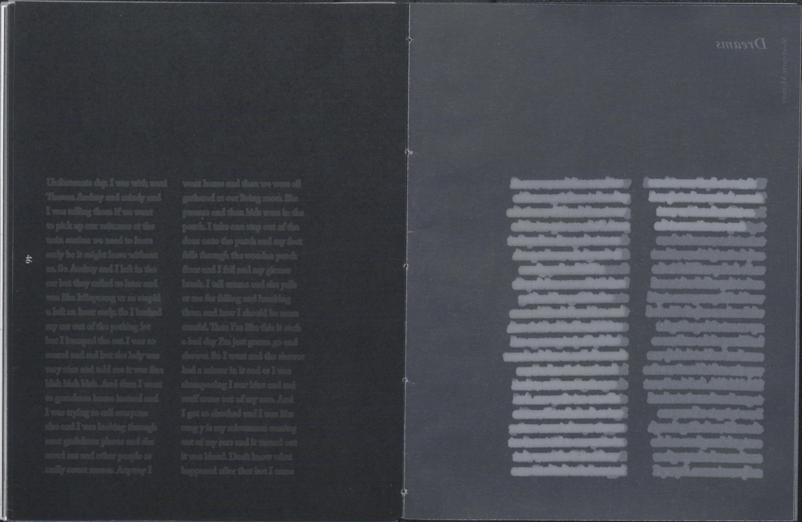
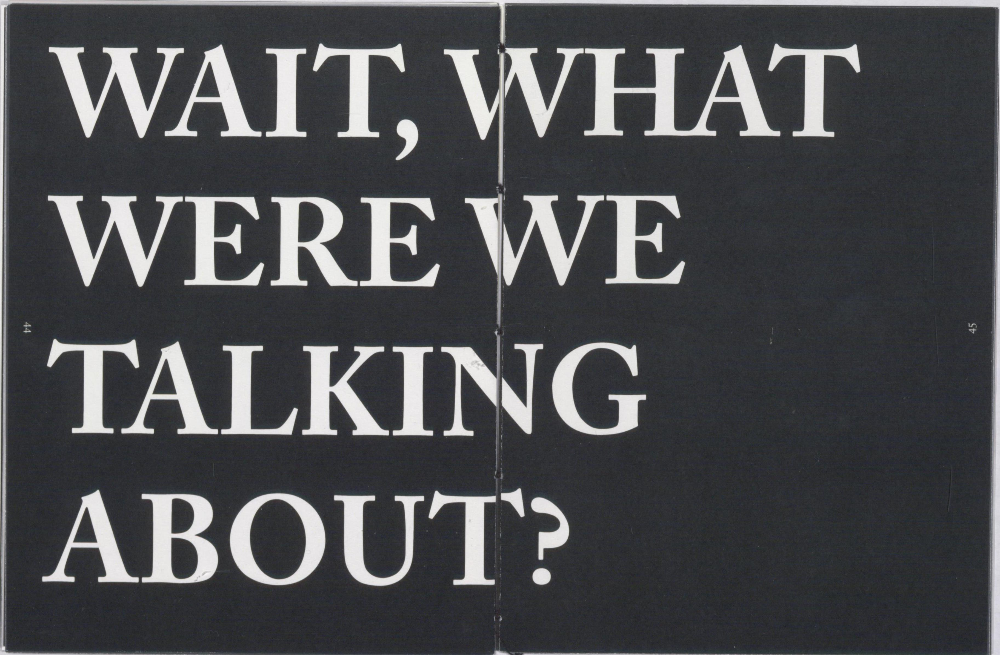
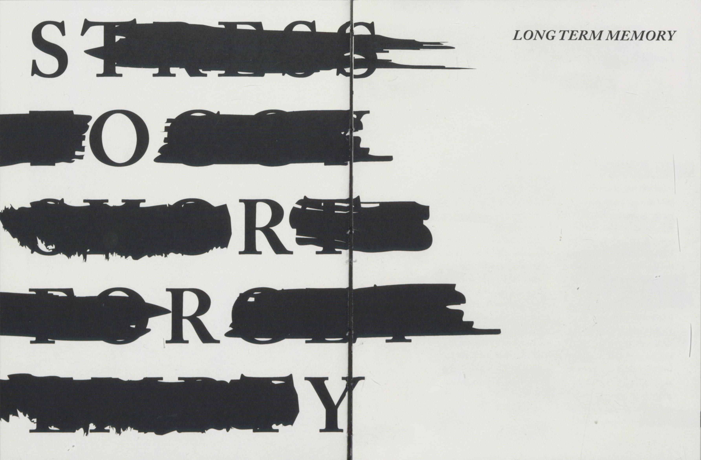

FORGET ME NOT
[Branding, visual identity, publication design, experimental design]
Forget Me Not is a intimate exploration between memory and its influence on human
perception and cognition. The book examines the complexities of memory loss through
a curated narrative that integrates both visual and textual elements. Each section
includes stories and elements that serve as tangible representations of memory
preservation, illustrating the ways in which memories can be recorded and revisited.
Contrasting these moments of preservation are intentional visual disruptions—such as blurs, lines, blank spaces, and gradually illegible text—that simulate the experience of forgetfulness. The absence of color throughout the work reinforces the themes of emptiness, nostalgia, and gradual loss. This project seeks to convey the tension between the act of preserving memories and the inevitability of their erosion, offering a visual and conceptual reflection on the fragility of human recollection.
Contrasting these moments of preservation are intentional visual disruptions—such as blurs, lines, blank spaces, and gradually illegible text—that simulate the experience of forgetfulness. The absence of color throughout the work reinforces the themes of emptiness, nostalgia, and gradual loss. This project seeks to convey the tension between the act of preserving memories and the inevitability of their erosion, offering a visual and conceptual reflection on the fragility of human recollection.











